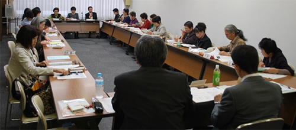

|
|
11月9日(月)10時30分より、さいたま共済会館505会議室にて、第7回埼玉消費者大会実行委員会を開催し、14団体20人と事務局2人が出席しました。  1．第51回埼玉県消費者大会のふりかえり 事務局より実施報告書、参加者アンケート集計結果、各団体参加人数、決算状況、事前に実行委員会団体に回答していただいた「ふりかえりアンケート」について報告し、意見交換をおこないました。 2．第52回埼玉県消費者大会について 事務局より、次期大会実行委員会に引き継ぐ内容について提案し、運営体制、日程、会場、すすめ方などを確認しました。
3．埼玉県との懇談会のすすめ方について 提出した消費者大会の要請文にもとづき、内容を深めるために、全体で10本の発言をおこなうことを確認しました。 4．県内消費者団体地区別交流会について 埼玉消団連が埼玉県委託事業としておこなっている「県内消費者団体地区別交流会」への参加を呼びかけました。あわせて、実行委員会団体とつながりのある地域の消費者団体への声掛けをお願いしました。 5．お知らせ
|